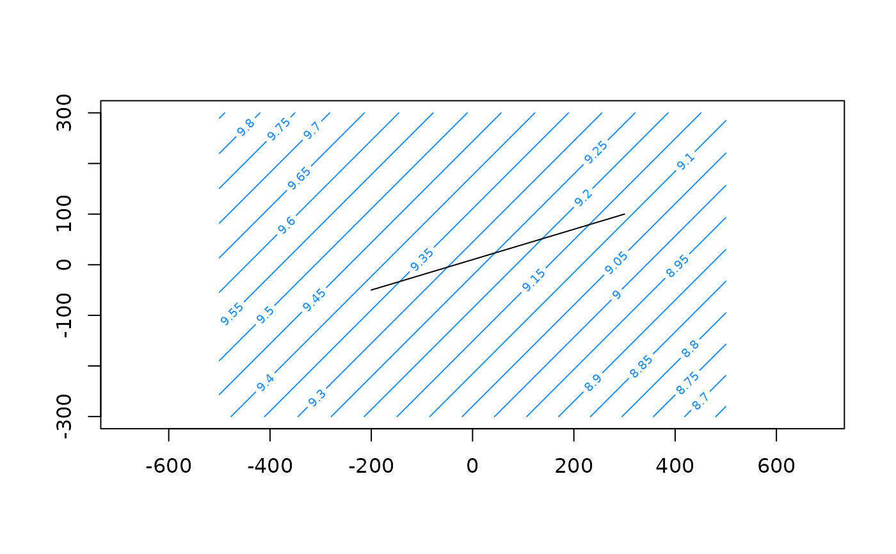
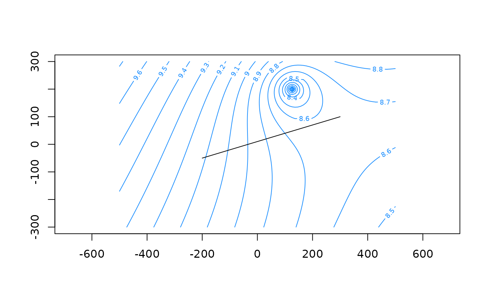

flow_through_line() computes the integrated flow passing through a straight line at a right angle.
Usage
flow_through_line(
aem,
x0,
y0,
x1,
y1,
flow = c("discharge", "darcy"),
split = FALSE,
...
)Arguments
- aem
aemobject- x0
numeric, starting x location of line
- y0
numeric, starting y location of line
- x1
numeric, ending x location of line
- y1
numeric, ending y location of line
- flow
character specifying which flow variable to use. Possible values are
discharge(default) anddarcy. Seeflow().- split
logical, should the flow be split up into positive and negative flows or should they be summed (default)? See details.
- ...
ignored
Value
If split = FALSE, a single value with the total flow of variable flow passing through the line at a right angle.
If split = TRUE a named vector with the total positive and total negative value of flow passing through the line.
Details
The flow is computed normal to the line and integrated along the line length using stats::integrate().
The flow value is positive going to the left when looking in the direction of the line (i.e. to the left going from x0-y0
to x1-y1).
If split = FALSE (the default), a single value is returned which is the sum of the positive and negative flows perpendicular to the line.
If split = TRUE, both the positive and negative component of the total flow through the line are returned.
If the line corresponds to a line element, the integration might fail. Try to perturbate the line vertices slightly in that case.
Examples
rf <- constant(-1000, 0, hc = 10)
uf <- uniformflow(TR = 100, gradient = 0.001, angle = -45)
m <- aem(k = 10, top = 10, base = 0, n = 0.2, rf, uf)
xg <- seq(-500, 500, l=100); yg <- seq(-300, 300, l=100)
contours(m, xg, yg, col='dodgerblue', nlevels=20)
x0 <- -200
y0 <- -50
x1 <- 300
y1 <- 100
lines(matrix(c(x0, y0, x1, y1), ncol = 2, byrow = TRUE))

flow_through_line(m, x0, y0, x1, y1)
#> [1] -45.96194
flow_through_line(m, x1, y1, x0, y0) # reverse direction of line
#> [1] 45.96194
w <- well(125, 200, 150)
m <- aem(k = 10, top = 10, base = 0, n = 0.2, rf, uf, w)
contours(m, xg, yg, col='dodgerblue', nlevels=20)
lines(matrix(c(x0, y0, x1, y1), ncol = 2, byrow = TRUE))

flow_through_line(m, x0, y0, x1, y1, flow = 'darcy')
#> [1] 0.1633028
flow_through_line(m, x0, y0, x1, y1, flow = 'darcy', split = TRUE)
#> positive negative
#> 1.369686 -1.206383